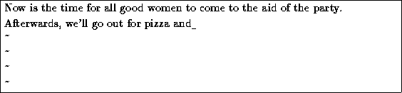
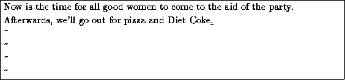
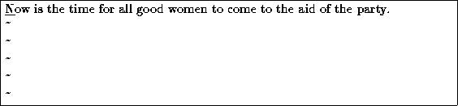

From command mode, the x command deletes the character under the cursor. If you press five times, you'll end up with:

Now press  , insert some text, followed by
, insert some text, followed by  :
:

You can delete entire lines using the command dd (that is, press twice in a row). If your cursor is on the second line, and you type dd,

To delete the word which the cursor is on, use the dw command. Place the cursor on the word ``good'', and type dw.